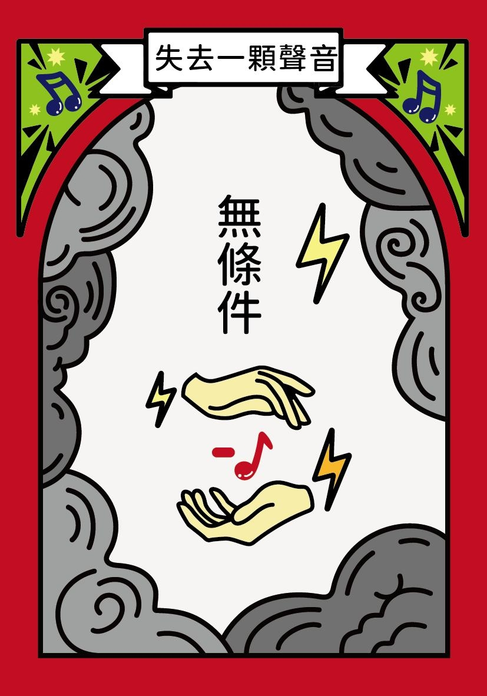
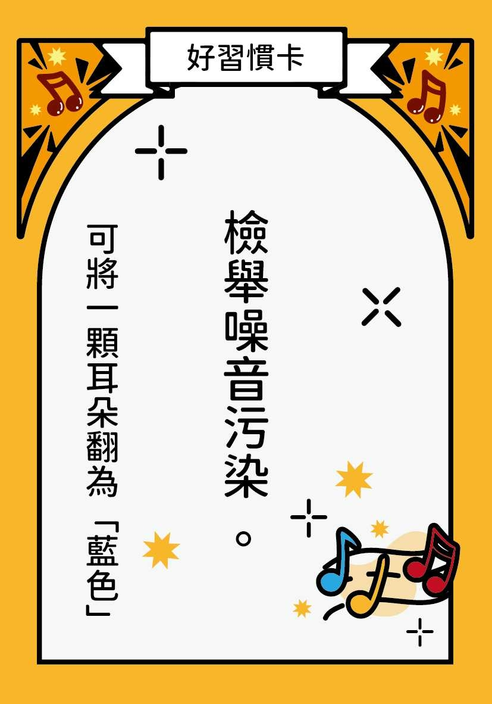

<!DOCTYPE html>
<html lang="en" dir="ltr">
  <head>
    <title> Random Image </title>

    <link rel="stylesheet" href="https://code.jquery.com/mobile/1.4.5/jquery.mobile-1.4.5.min.css" />
    <script src="https://code.jquery.com/jquery-1.11.1.min.js"></script>
    <script src="https://code.jquery.com/mobile/1.4.5/jquery.mobile-1.4.5.min.js"></script>
    <meta name="viewport" content="width=device-width", initial-scale="1">
    


  </head>
  <body style="background-color:black;" data-role="content" align="center" >
    <div style="background-color:black;">

        <script type="text/javascript"  >
            //Javascript Created by Computerhope https://www.computerhope.com/
            //store the quotations in arrays
            var images = [],
            index = 0;
            //聲音卡
            //（無條件）
            images[0] = "<a href = 'https://sites.google.com/grad.ntue.edu.tw/hearing-health/聲林歷險記桌遊/事件卡-飲食均衡類/音樂超過60?authuser=0'></a>";
            images[1] = "<a href = 'https://sites.google.com/grad.ntue.edu.tw/hearing-health/聲林歷險記桌遊/事件卡-飲食均衡類/音樂超過60?authuser=0'></a>";
            images[2] = "<a href = 'https://sites.google.com/grad.ntue.edu.tw/hearing-health/聲林歷險記桌遊/事件卡-飲食均衡類/音樂超過60?authuser=0'></a>";
            images[3] = "<a href = 'https://sites.google.com/grad.ntue.edu.tw/hearing-health/聲林歷險記桌遊/事件卡-飲食均衡類/音樂超過60?authuser=0'></a>";
            images[4] = "<a href = 'https://sites.google.com/grad.ntue.edu.tw/hearing-health/聲林歷險記桌遊/事件卡-飲食均衡類/音樂超過60?authuser=0'></a>";
            images[5] = "<a href = 'https://sites.google.com/grad.ntue.edu.tw/hearing-health/聲林歷險記桌遊/事件卡-飲食均衡類/音樂超過60?authuser=0'></a>";
            images[6] = "<a href = 'https://sites.google.com/grad.ntue.edu.tw/hearing-health/聲林歷險記桌遊/事件卡-飲食均衡類/音樂超過60?authuser=0'></a>";
            images[7] = "<a href = 'https://sites.google.com/grad.ntue.edu.tw/hearing-health/聲林歷險記桌遊/事件卡-飲食均衡類/音樂超過60?authuser=0'></a>";
            images[8] = "<a href = 'https://sites.google.com/grad.ntue.edu.tw/hearing-health/聲林歷險記桌遊/事件卡-飲食均衡類/音樂超過60?authuser=0'></a>";
            images[9] = "<a href = 'https://sites.google.com/grad.ntue.edu.tw/hearing-health/聲林歷險記桌遊/事件卡-飲食均衡類/音樂超過60?authuser=0'></a>";
            images[10] = "<a href = 'https://sites.google.com/grad.ntue.edu.tw/hearing-health/聲林歷險記桌遊/事件卡-飲食均衡類/音樂超過60?authuser=0'></a>";
            images[11] = "<a href = 'https://sites.google.com/grad.ntue.edu.tw/hearing-health/聲林歷險記桌遊/事件卡-飲食均衡類/音樂超過60?authuser=0'></a>";
            images[12] = "<a href = 'https://sites.google.com/grad.ntue.edu.tw/hearing-health/聲林歷險記桌遊/事件卡-飲食均衡類/音樂超過60?authuser=0'></a>";
            images[13] = "<a href = 'https://sites.google.com/grad.ntue.edu.tw/hearing-health/聲林歷險記桌遊/事件卡-飲食均衡類/音樂超過60?authuser=0'></a>";
            images[14] = "<a href = 'https://sites.google.com/grad.ntue.edu.tw/hearing-health/聲林歷險記桌遊/事件卡-飲食均衡類/音樂超過60?authuser=0'></a>";
            images[15] = "<a href = 'https://sites.google.com/grad.ntue.edu.tw/hearing-health/聲林歷險記桌遊/事件卡-飲食均衡類/音樂超過60?authuser=0'></a>";
            images[16] = "<a href = 'https://sites.google.com/grad.ntue.edu.tw/hearing-health/聲林歷險記桌遊/事件卡-飲食均衡類/音樂超過60?authuser=0'></a>";
            images[17] = "<a href = 'https://sites.google.com/grad.ntue.edu.tw/hearing-health/聲林歷險記桌遊/事件卡-飲食均衡類/音樂超過60?authuser=0'></a>";
            images[18] = "<a href = 'https://sites.google.com/grad.ntue.edu.tw/hearing-health/聲林歷險記桌遊/事件卡-飲食均衡類/音樂超過60?authuser=0'></a>";
            images[19] = "<a href = 'https://sites.google.com/grad.ntue.edu.tw/hearing-health/聲林歷險記桌遊/事件卡-飲食均衡類/音樂超過60?authuser=0'></a>";
            //（有耳朵站在馬路）
            images[20] = "<a href = 'https://sites.google.com/grad.ntue.edu.tw/hearing-health/聲林歷險記桌遊/事件卡-飲食均衡類/音樂超過60?authuser=0'></a>";
            images[21] = "<a href = 'https://sites.google.com/grad.ntue.edu.tw/hearing-health/聲林歷險記桌遊/事件卡-飲食均衡類/音樂超過60?authuser=0'></a>";
            images[22] = "<a href = 'https://sites.google.com/grad.ntue.edu.tw/hearing-health/聲林歷險記桌遊/事件卡-飲食均衡類/音樂超過60?authuser=0'></a>";
            //（有耳朵停在市場）
            images[23] = "<a href = 'https://sites.google.com/grad.ntue.edu.tw/hearing-health/聲林歷險記桌遊/事件卡-飲食均衡類/音樂超過60?authuser=0'></a>";
            images[24] = "<a href = 'https://sites.google.com/grad.ntue.edu.tw/hearing-health/聲林歷險記桌遊/事件卡-飲食均衡類/音樂超過60?authuser=0'></a>";
            images[25] = "<a href = 'https://sites.google.com/grad.ntue.edu.tw/hearing-health/聲林歷險記桌遊/事件卡-飲食均衡類/音樂超過60?authuser=0'></a>";
            //（有耳朵停在公園）
            images[26] = "<a href = 'https://sites.google.com/grad.ntue.edu.tw/hearing-health/聲林歷險記桌遊/事件卡-飲食均衡類/音樂超過60?authuser=0'></a>";
            images[27] = "<a href = 'https://sites.google.com/grad.ntue.edu.tw/hearing-health/聲林歷險記桌遊/事件卡-飲食均衡類/音樂超過60?authuser=0'></a>";
            images[28] = "<a href = 'https://sites.google.com/grad.ntue.edu.tw/hearing-health/聲林歷險記桌遊/事件卡-飲食均衡類/音樂超過60?authuser=0'></a>";
            //（搓搓手指5秒鐘）
            images[29] = "<a href = 'https://sites.google.com/grad.ntue.edu.tw/hearing-health/聲林歷險記桌遊/事件卡-飲食均衡類/音樂超過60?authuser=0'></a>";
            //（說出一個聽力保健做法）
            images[30] = "<a href = 'https://sites.google.com/grad.ntue.edu.tw/hearing-health/聲林歷險記桌遊/事件卡-飲食均衡類/音樂超過60?authuser=0'></a>";
            //（拍手10下）
            images[31] = "<a href = 'https://sites.google.com/grad.ntue.edu.tw/hearing-health/聲林歷險記桌遊/事件卡-飲食均衡類/音樂超過60?authuser=0'></a>";
            //（說出：到南港展覽館的官方網站看展覽資訊）
            images[32] = "<a href = 'https://sites.google.com/grad.ntue.edu.tw/hearing-health/聲林歷險記桌遊/事件卡-飲食均衡類/音樂超過60?authuser=0'></a>";
            //（原地踏步5下）
            images[33] = "<a href = 'https://sites.google.com/grad.ntue.edu.tw/hearing-health/聲林歷險記桌遊/事件卡-飲食均衡類/音樂超過60?authuser=0'></a>";

            //噪音卡
            //（無條件）
            images[34] = "<a href = 'https://sites.google.com/grad.ntue.edu.tw/hearing-health/聲林歷險記桌遊/事件卡-飲食均衡類/音樂超過60?authuser=0'></a>";
            images[35] = "<a href = 'https://sites.google.com/grad.ntue.edu.tw/hearing-health/聲林歷險記桌遊/事件卡-飲食均衡類/音樂超過60?authuser=0'></a>";
            images[36] = "<a href = 'https://sites.google.com/grad.ntue.edu.tw/hearing-health/聲林歷險記桌遊/事件卡-飲食均衡類/音樂超過60?authuser=0'></a>";
            images[37] = "<a href = 'https://sites.google.com/grad.ntue.edu.tw/hearing-health/聲林歷險記桌遊/事件卡-飲食均衡類/音樂超過60?authuser=0'></a>";
            images[38] = "<a href = 'https://sites.google.com/grad.ntue.edu.tw/hearing-health/聲林歷險記桌遊/事件卡-飲食均衡類/音樂超過60?authuser=0'></a>";
            images[39] = "<a href = 'https://sites.google.com/grad.ntue.edu.tw/hearing-health/聲林歷險記桌遊/事件卡-飲食均衡類/音樂超過60?authuser=0'></a>";
            //（有紅色的耳朵站在馬路上）
            images[40] = "<a href = 'https://sites.google.com/grad.ntue.edu.tw/hearing-health/聲林歷險記桌遊/事件卡-飲食均衡類/音樂超過60?authuser=0'></a>";
            //（有紅色的耳朵停在商業區）
            images[41] = "<a href = 'https://sites.google.com/grad.ntue.edu.tw/hearing-health/聲林歷險記桌遊/事件卡-飲食均衡類/音樂超過60?authuser=0'></a>";
            //（有紅色的耳朵停在公園裡）
            images[42] = "<a href = 'https://sites.google.com/grad.ntue.edu.tw/hearing-health/聲林歷險記桌遊/事件卡-飲食均衡類/音樂超過60?authuser=0'></a>";
            //（「所有」有紅色的耳朵站在馬路上的玩家）
            images[43] = "<a href = 'https://sites.google.com/grad.ntue.edu.tw/hearing-health/聲林歷險記桌遊/事件卡-飲食均衡類/音樂超過60?authuser=0'></a>";
            //（「所有」有紅色的耳朵停在市場的玩家）
            images[44] = "<a href = 'https://sites.google.com/grad.ntue.edu.tw/hearing-health/聲林歷險記桌遊/事件卡-飲食均衡類/音樂超過60?authuser=0'></a>";
            //（「所有」有紅色的耳朵停在公園裡的玩家）
            images[45] = "<a href = 'https://sites.google.com/grad.ntue.edu.tw/hearing-health/聲林歷險記桌遊/事件卡-飲食均衡類/音樂超過60?authuser=0'></a>";

            //好習慣卡
            //（無條件）
            //（發現聽不清楚，及早求助專業人員）
            images[46] = "<a href = 'https://sites.google.com/grad.ntue.edu.tw/hearing-health/聲林歷險記桌遊/事件卡-飲食均衡類/音樂超過60?authuser=0'></a>";
            //（配戴有降噪功能的聽力輔具）
            images[47] = "<a href = 'https://sites.google.com/grad.ntue.edu.tw/hearing-health/聲林歷險記桌遊/事件卡-飲食均衡類/音樂超過60?authuser=0'></a>";
            //（根據自身需求，配戴助聽器）
            images[48] = "<a href = 'https://sites.google.com/grad.ntue.edu.tw/hearing-health/聲林歷險記桌遊/事件卡-飲食均衡類/音樂超過60?authuser=0'></a>";
            //（工作場域嘈雜，配戴降噪耳塞）
            images[49] = "<a href = 'https://sites.google.com/grad.ntue.edu.tw/hearing-health/聲林歷險記桌遊/事件卡-飲食均衡類/音樂超過60?authuser=0'></a>";
            //（發現聽不清楚孩童說話，及早求助專業人員）
            images[50] = "<a href = 'https://sites.google.com/grad.ntue.edu.tw/hearing-health/聲林歷險記桌遊/事件卡-飲食均衡類/音樂超過60?authuser=0'></a>";
            //（耳部感覺不適，及早求助專業人員）
            images[51] = "<a href = 'https://sites.google.com/grad.ntue.edu.tw/hearing-health/聲林歷險記桌遊/事件卡-飲食均衡類/音樂超過60?authuser=0'></a>";
            //（長時間處於嘈雜環境，定期安排聽力檢查）
            images[52] = "<a href = 'https://sites.google.com/grad.ntue.edu.tw/hearing-health/聲林歷險記桌遊/事件卡-飲食均衡類/音樂超過60?authuser=0'></a>";
            //（長時間處於嘈雜環境工作，每15分鐘離開噪音源，讓耳朵休息）
            images[53] = "<a href = 'https://sites.google.com/grad.ntue.edu.tw/hearing-health/聲林歷險記桌遊/事件卡-飲食均衡類/音樂超過60?authuser=0'></a>";
            //（維持均衡飲食與適當作息）
            images[54] = "<a href = 'https://sites.google.com/grad.ntue.edu.tw/hearing-health/聲林歷險記桌遊/事件卡-飲食均衡類/音樂超過60?authuser=0'></a>";
            //（看電視音量音量不超過60%）
            images[55] = "<a href = 'https://sites.google.com/grad.ntue.edu.tw/hearing-health/聲林歷險記桌遊/事件卡-飲食均衡類/音樂超過60?authuser=0'></a>";
            //（發現耳道異物，求助耳鼻喉科醫師）
            images[56] = "<a href = 'https://sites.google.com/grad.ntue.edu.tw/hearing-health/聲林歷險記桌遊/事件卡-飲食均衡類/音樂超過60?authuser=0'></a>";
            //（保持心情愉悅）
            images[57] = "<a href = 'https://sites.google.com/grad.ntue.edu.tw/hearing-health/聲林歷險記桌遊/事件卡-飲食均衡類/音樂超過60?authuser=0'></a>";
            //（檢舉噪音污染）
            images[58] = "<a href = 'https://sites.google.com/grad.ntue.edu.tw/hearing-health/聲林歷險記桌遊/事件卡-飲食均衡類/音樂超過60?authuser=0'></a>";

            //壞習慣卡
            //（因聽損問題，造成思考能力退化）
            images[59] = "<a href = 'https://sites.google.com/grad.ntue.edu.tw/hearing-health/聲林歷險記桌遊/事件卡-飲食均衡類/音樂超過60?authuser=0'></a>";
            //（因聽損問題，造成身體平衡感不佳）
            images[60] = "<a href = 'https://sites.google.com/grad.ntue.edu.tw/hearing-health/聲林歷險記桌遊/事件卡-飲食均衡類/音樂超過60?authuser=0'></a>";
            //（因聽損問題，影響人際關係）
            images[61] = "<a href = 'https://sites.google.com/grad.ntue.edu.tw/hearing-health/聲林歷險記桌遊/事件卡-飲食均衡類/音樂超過60?authuser=0'></a>";
            //（拒絕配戴助聽器）
            images[62] = "<a href = 'https://sites.google.com/grad.ntue.edu.tw/hearing-health/聲林歷險記桌遊/事件卡-飲食均衡類/音樂超過60?authuser=0'></a>";

            //無敵卡
            images[63] = "<a href = 'https://sites.google.com/grad.ntue.edu.tw/hearing-health/聲林歷險記桌遊/事件卡-飲食均衡類/音樂超過60?authuser=0'></a>";
            images[64] = "<a href = 'https://sites.google.com/grad.ntue.edu.tw/hearing-health/聲林歷險記桌遊/事件卡-飲食均衡類/音樂超過60?authuser=0'></a>";
            images[65] = "<a href = 'https://sites.google.com/grad.ntue.edu.tw/hearing-health/聲林歷險記桌遊/事件卡-飲食均衡類/音樂超過60?authuser=0'></a>";
            images[66] = "<a href = 'https://sites.google.com/grad.ntue.edu.tw/hearing-health/聲林歷險記桌遊/事件卡-飲食均衡類/音樂超過60?authuser=0'></a>";
            images[67] = "<a href = 'https://sites.google.com/grad.ntue.edu.tw/hearing-health/聲林歷險記桌遊/事件卡-飲食均衡類/音樂超過60?authuser=0'></a>";
            images[68] = "<a href = 'https://sites.google.com/grad.ntue.edu.tw/hearing-health/聲林歷險記桌遊/事件卡-飲食均衡類/音樂超過60?authuser=0'></a>";
            images[69] = "<a href = 'https://sites.google.com/grad.ntue.edu.tw/hearing-health/聲林歷險記桌遊/事件卡-飲食均衡類/音樂超過60?authuser=0'></a>";
            images[70] = "<a href = 'https://sites.google.com/grad.ntue.edu.tw/hearing-health/聲林歷險記桌遊/事件卡-飲食均衡類/音樂超過60?authuser=0'></a>";


            index = Math.floor(Math.random() * images.length);
            document.write(images[index]);
            //done
            </script>

    </div>
    
  </body>
</html>